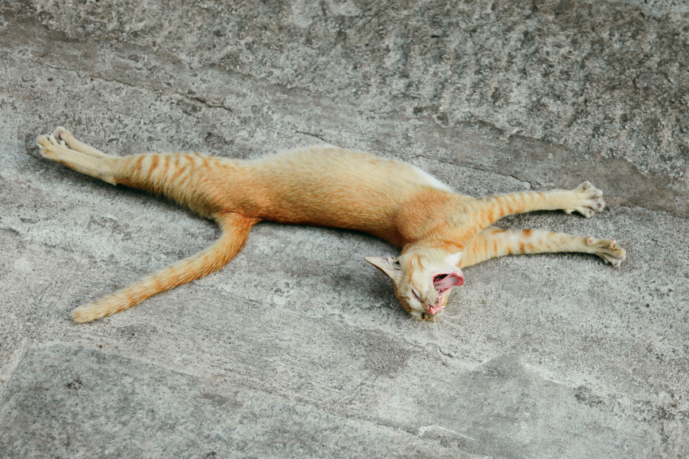

Willkommen bei dem Fellfreunde Tierheim
Auf dieser Website können Sie den perfekten tierischen Begleiter finden. Sehen Sie sich unsere Kategorien an und entdecken Sie die besten Tiere zur Adoption!
Empfohlene Tiere

Energetic Ella
Voller Energie, liebt es zu spielen und braucht viel Bewegung.

Curious Charlie
Neugierig und verspielt, immer auf der Suche nach einem Abenteuer.

Lazy Leo
Entspannt und kuschelig, liebt es zu faulenzen.

Playful Paws
Liebt es zu spielen und ist sehr freundlich.

Sleepy Sam
Ruhig und gelassen, perfekt für ein entspanntes Zuhause.

Friendly Fido
Sehr freundlich und liebt Gesellschaft.